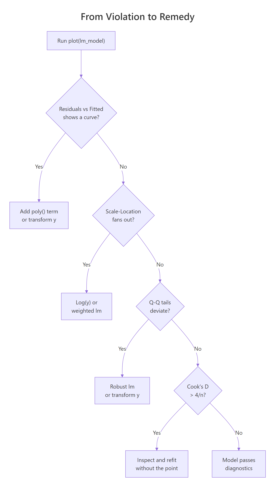
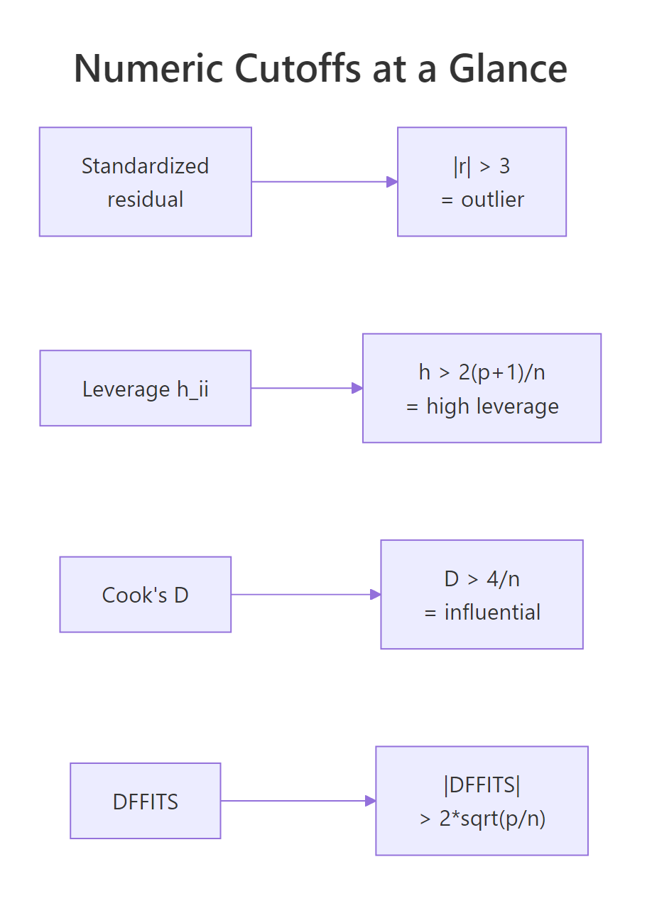
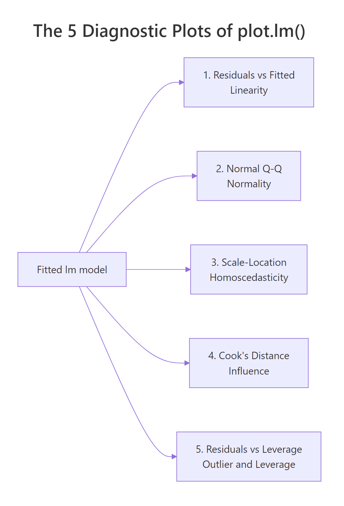

Regression Diagnostics in R: 5 Plots That Reveal Model Violations Instantly
Regression diagnostics are the visual and numeric checks that tell you whether a fitted linear model earned the right to its p-values. In R, a single call to plot(lm_model) returns five diagnostic plots that map one-to-one onto the OLS assumptions plus influence detection, and each plot has a numeric cutoff that turns a squinty judgment call into a rule.
What are the 5 diagnostic plots of plot.lm() in R?
Before you read off a p-value or trust a slope, you need to know if the model earned that right. The fastest way to find out is a single call: pass a fitted lm object to plot() and R returns five diagnostic plots back to back. Fit a model on mtcars, set up a 2-by-3 panel, and everything you need appears in one screen.
Each number in which picks a specific plot. By default, plot(model) draws four of them (which = c(1, 2, 3, 5)); Cook's distance (which = 4) is opt-in but worth adding every time because it gives the cleanest numeric view of influence. The five plots cover the four classical OLS assumptions plus the question every analyst eventually has to answer: is one observation driving my results?
x and y can look ugly, skewed, or discrete and the model can still be fine, as long as the residuals behave.Try it: Fit a model of Sepal.Length ~ Petal.Length + Petal.Width on the iris dataset and draw all 5 diagnostic plots.
Click to reveal solution
Explanation: par(mfrow = c(2, 3)) splits the device into 2 rows x 3 columns, and which = 1:5 asks for all five plots.
How does the Residuals vs Fitted plot check linearity?
The first plot, Residuals vs Fitted, is the single most important diagnostic. A residual is what's left after the model has done its work: $e_i = y_i - \hat{y}_i$. If the linearity assumption holds, residuals scatter around zero with no systematic pattern, and the red LOWESS line that R draws on top sits nearly flat.
A curved red line is a red flag. It says the model missed a non-linear relationship, and that the "best straight line" is now apologising for the missing curve by leaving systematic errors at certain fitted values. Let's see the healthy case on mtcars, then a deliberately broken case where the true relationship is quadratic but we fit only a straight line.
The mtcars plot has some scatter but the red line stays close to the horizontal zero. The synthetic plot has an unmistakable inverted-U, which is the classic "I forgot a quadratic term" signature. Once you've seen it a few times, you recognise it instantly.

Figure 1: Decision tree from a diagnostic violation to the most common remedy.
lm(y ~ poly(x, 2)) first; if that doesn't flatten the plot, consider log(y) or sqrt(y) transforms, or a GAM from the mgcv package.Try it: Fit the straight-line model ex_curve <- lm(y ~ x, data = bad_df) yourself and generate only the Residuals vs Fitted plot. Do you see the U?
Click to reveal solution
Explanation: plot(lm_obj, which = 1) draws just the residuals-versus-fitted panel instead of the default four.
How do you read the Normal Q-Q plot for residual normality?
The Normal Q-Q plot ranks your standardized residuals smallest to largest and pairs each one with the quantile you'd expect from a standard normal distribution. If residuals are normal, the points sit on the dashed 45-degree line. If they deviate, the shape of the deviation tells you what's wrong: an S-curve means heavy tails, a bow points to skew, and a few stragglers off either end usually mean outliers.
Normality of residuals matters mainly for small-sample confidence intervals and prediction intervals. With n > 30, the central limit theorem protects the slope's sampling distribution even if residuals are mildly non-normal, so you don't need perfection, just the absence of egregious tail deviation.
On mtcars, residuals track the dashed line well and Shapiro-Wilk returns p = 0.23, so we fail to reject the null that residuals are normal. In words: the Q-Q looks fine and the formal test agrees.
Try it: Run shapiro.test() on the residuals of model yourself and extract just the p-value with $p.value.
Click to reveal solution
Explanation: The htest object returned by shapiro.test() stores the p-value in the $p.value slot.
What does the Scale-Location plot tell you about homoscedasticity?
The Scale-Location plot (sometimes called Spread-Location) plots the square root of the absolute standardized residuals against the fitted values. The square root compresses extreme values; taking the absolute value folds the plot so you're looking at magnitude only. If variance is constant (homoscedasticity), points form a roughly horizontal band and the red LOWESS line is flat. If variance grows with the fitted value (the most common violation), the red line tilts upward and the points fan out into a megaphone shape.
Heteroscedasticity doesn't bias your coefficients; the slope estimates stay unbiased. What breaks is the standard errors: they become too small where variance is high, so t-statistics and p-values lie. That's why it's worth a 10-second diagnostic.
You can also test this numerically with the Breusch-Pagan idea in base R by regressing the squared residuals on the fitted values: a significant slope there is evidence of heteroscedasticity.
The slope on fitted(hetero_fit) is highly significant (p < 1e-8), confirming what the plot already showed: variance scales with the fitted value.
sandwich::vcovHC(), or a weighted least-squares fit, or a log/sqrt transformation of y.Try it: Draw only the Scale-Location plot for hetero_fit and confirm the upward tilt.
Click to reveal solution
Explanation: which = 3 selects the Scale-Location plot. A flat red line means constant variance; a tilted one means it grew.
How does Cook's distance identify influential observations?
Cook's distance answers a simple, practical question: how much would the fitted values change if I dropped observation i? If the answer is "a lot," that single row is pulling the entire regression line toward itself and you need to know.
The formula combines the standardized residual and the leverage:
$$D_i = \frac{e_i^2}{p \cdot \hat{\sigma}^2} \cdot \frac{h_{ii}}{(1 - h_{ii})^2}$$
Where:
- $D_i$ = Cook's distance for observation $i$
- $e_i$ = raw residual for observation $i$
- $p$ = number of fitted parameters (including the intercept)
- $\hat{\sigma}^2$ = residual variance
- $h_{ii}$ = leverage (hat-matrix diagonal) for observation $i$
Two rules of thumb are in wide use. The strict one is $D_i > 1$ for definitely influential points; the sensitive one, and the one we'll use here, is $D_i > 4/n$ for points that deserve a closer look. On mtcars with n = 32, that threshold is 0.125.
Three rows cross the sensitive threshold. Chrysler Imperial is the biggest lever, and Maserati Bora is a well-known mtcars oddball (very high horsepower, very low mpg). The next natural step is to refit without the biggest offender and compare coefficients.
The wt coefficient jumped from −3.80 to −3.19 and disp changed sign and became ten times larger. That's exactly the kind of shift Cook's distance is designed to catch: a single row reshaping the story.
Try it: Print just the row names of the observations with Cook's distance above 4/n.
Click to reveal solution
Explanation: Logical indexing [ex_cd > threshold] keeps only names whose Cook's D crosses the cutoff.
How do you spot outliers and high leverage in Residuals vs Leverage?
The fifth plot combines two distinct ideas. A standardized residual measures how far an observation falls from the fitted line in units of its own standard deviation, with $|r_i| > 3$ the usual outlier cutoff. Leverage, or $h_{ii}$, measures how extreme an observation's predictor values are compared with the rest of the data; the rule of thumb is $h_{ii} > 2(p+1)/n$. A point is influential only when it combines both: a big residual and high leverage. That's why Cook's distance contours appear on this plot.
Let's build a small diagnostic table that puts all three quantities side by side and flags each row against its threshold.
Maserati Bora is the one row with high leverage (0.468 > 0.31), but its standardized residual is only −1.09, so it's not pulling the line much. Chrysler Imperial has the opposite pattern: ordinary leverage, a largeish residual, and the biggest Cook's D. Together they illustrate the rule visually.

Figure 2: Numeric cutoffs for outliers, leverage, Cook's distance, and DFFITS.
Try it: Pull out the row names of observations with leverage above the 2*(p+1)/n cutoff.
Click to reveal solution
Explanation: hatvalues() returns $h_{ii}$ for each row. Keep names where leverage exceeds the $2(p+1)/n$ cutoff.
Practice Exercises
These combine multiple diagnostic ideas into harder checks. Solve them before peeking.
Exercise 1: Diagnose a new mtcars specification
Fit lm(mpg ~ wt + qsec + am, data = mtcars) and answer two questions with one code block: (a) is Shapiro-Wilk's normality test rejected at the 0.05 level? (b) how many rows have Cook's distance above 4/n?
Click to reveal solution
Explanation: Run Shapiro on the residuals and count Cook's D rows above 4/n. Both answers come from one fitted object.
Exercise 2: Build a ranked influence table
For model, build a table cap2_tbl with one row per observation, sorted by Cook's distance descending, containing: car, cooks_d (rounded to 3), and a logical column any_flag that is TRUE if the row triggers any one of the three rules (outlier, high leverage, high Cook's D). Print the top 5.
Click to reveal solution
Explanation: Combine three vectorized comparisons with logical OR; sort by Cook's D descending; keep the top 5.
Exercise 3: Measure the coefficient shift from removing the top Cook's point
Refit model without the single row with the largest Cook's distance and save the result to cap3_compare as a data frame with the coefficient name, the original estimate, the estimate after removal, and the percent change.
Click to reveal solution
Explanation: which.max() finds the highest-leverage-meets-residual row; refit without it and compute the coefficient delta.
Complete Example
Let's run the full diagnostic workflow on the built-in airquality dataset: predict Ozone from Solar.R, Wind, and Temp, check all five diagnostics, fix the worst violation with a transformation, and confirm the fix.
The Q-Q plot shows a clear right skew and Shapiro-Wilk screams non-normality (p < 1e-8). Six observations have Cook's D above the sensitive threshold. The Residuals vs Fitted plot also shows a megaphone. All of this points to a classic fix: regress on log(Ozone) instead of Ozone.
After the log transform, Shapiro's p-value rises from 3e-9 to 0.19 (we no longer reject normality), the Residuals vs Fitted band tightens, and only four rows exceed the Cook's D cutoff. That's the diagnostic loop in one screen: fit, check, fix, confirm.
Summary

Figure 3: Each of the 5 diagnostic plots maps to a specific OLS assumption.
Plot (which) |
Assumption tested | Numeric rule | Common fix | ||
|---|---|---|---|---|---|
| 1. Residuals vs Fitted | Linearity | LOWESS roughly flat | Add poly() term or transform y |
||
| 2. Normal Q-Q | Normality of residuals | Points near dashed line; Shapiro p > 0.05 | Transform y (log, sqrt) or use robust lm |
||
| 3. Scale-Location | Homoscedasticity | Red line flat; BP p > 0.05 | log(y), weighted lm, or robust SEs |
||
| 4. Cook's distance | Influence | $D_i < 4/n$ | Investigate, refit, or keep with caveat | ||
| 5. Residuals vs Leverage | Outliers + leverage | $\ | r\ | < 3$; $h_{ii} < 2(p+1)/n$ | Investigate before deleting |
plot(lm_model)draws 4 of the 5 by default; passwhich = 1:5to get Cook's distance too.- All assumptions are about the residuals, not the raw data.
- Cook's distance combines residual size and leverage in one number, which is why it catches cases the other plots miss.
- No single cutoff is a law; use them to decide where to look, not what to conclude.
References
- Fox, J. and Weisberg, S., An R Companion to Applied Regression, 3rd Edition. Sage (2019). Chapter 8: Diagnostics. Link
- R Core Team,
plot.lmreference, basestatspackage. Link - UVA Library, Understanding Diagnostic Plots for Linear Regression Analysis. Link
- STHDA, Linear Regression Assumptions and Diagnostics in R. Link
- Cook, R. D., "Detection of Influential Observations in Linear Regression." Technometrics, 19(1), 15–18 (1977). Link
- Belsley, D. A., Kuh, E., and Welsch, R. E., Regression Diagnostics: Identifying Influential Data and Sources of Collinearity. Wiley (1980). Link
- Kassambara, A.,
regressinatorvignette on Linear Regression Diagnostics (CRAN). Link
Continue Learning
- Linear Regression Assumptions in R: the full list of 5 assumptions with formal tests for each.
- Linear Regression in R: how
lm()works, what the coefficients mean, and how to read a model summary. - Outlier Detection in R: methods beyond standardized residuals for finding unusual points before regression.